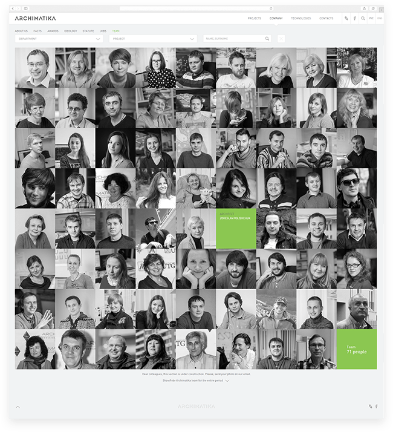

Web-site
The primary target was to show awesome pictures and detailed description with used technologies of the projects



Work with logo
Efficient architecture — is a teamwork of architects, engineers and structural designers, targeted at the result: maximal profitability of investment, maximal quality of architectural environment for a customer, maximal profit from architectural object for the city and its citizens.